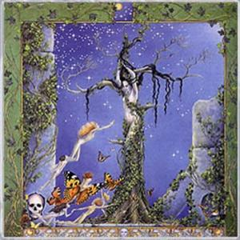

|

Época: septiembre-octubre
Signo: libra
Hierba: avena
Animal: gato
Diosa: Maat. Kali
Color: rojo
Nombres: Luna de Gort (Hiedra) para los celtas, Luna de la manzana o la pera para los apalaches, Luna de la caza para los nativos americanos del nordeste, luna de sangre para los wiccanos.
Los días son cada vez más oscuros, la noche les va ganando terreno. El otoño ya está aquí y se aprecia en los colores rojizos que empiezan a mostrar algunos árboles. Es tiempo de preparar las últimas cosechas y de recoger todo lo que necesitemos para pasar los meses de frío.
La energía de libra nos aporta las cualidades de comodidad y belleza. Libra está regido por Venus, planeta del placer, el amor y la belleza. Es el momento perfecto para hacer rituales que potencien nuestro amor, y podemos trabajar con el arquetipo del amante divino. Libra, por otro lado, refuerza nuestro sentido de la justicia y nos anima a participar en actividades sociales y políticas. El trabajo mágico con las polaridades o pares de opuestos encuentra el marco perfecto bajo esta luna.
Como ya he dicho, una de las características lunares es el placer. Buen momento por tanto para encontrar tiempo para el ocio, y aprender a repartir el tiempo de trabajo y el tiempo que debemos dedicar a nosotros mismos. Aprender también a utilizar todos los sentidos a la hora de descubrir el placer.
FESTIVIDADES RELACIONADAS:
- Durga Puja: entre septiembre y octubre la India celebra la gran festividad de la diosa Durga como divina madre. En Bengala es una festividad familiar, los niños honran a sus padres y los vecinos enemistados hacen las paces.
- Luna llena de Asvin: en la India durante esta noche se exponen los dulces y las bebidas azucaradas a la luz para que puedan absorber la dulzura del soma. En su mitología la luna es el resultado de la evolución, es la ofrenda (el soma) que al ser consumida alimenta a la vida. Se cree que los alimentos expuestos a la luz de esta luna de gran poder curarán todas las enfermedades y aportan belleza, especialmente las oculares.
- Festividad de Ciuateotl: en el antiguo Méjico, la luna llena de la cosecha era la mujer serpiente Ciuateotl, madre de la adversidad, la pobreza, y del esfuerzo. Sus sacerdotisas llevaban emblemas fálicos para atraerla y que protegiera los cultivos.
- Festividad de los niños: en Vietnam los niños desfilan en procesión bajo la luz de la luna cantando esta canción:
“Sigamos el ritmo y bailemos sin reírnos los unos de otros,
Porque no hay ninguna rama que esté libre de gusanos,
Sigamos este ritmo, sigamos este ritmo,
Si ahora no reflexionáis sobre la vida,
Después ya no podréis hacerlo.
Sigamos este ritmo.”
(Burder, Skipping around the world,63.)
-Luna llena tras el equinoccio de otoño: En Escandinavia esta festividad marcaba la mitad del invierno. Se celebraba la cosecha y se hacían ofrendas a las dísir, espíritus femeninos de los antepasados. Se ofrecían cuernos de cerveza y aguamiel a los dioses y a los muertos. La Dísir podía ser considerada como la madre de las diosas galorromanas. Entre los pueblos germánicos, se consideraba que las mujeres poseían una gran fuerza espiritual. Se suponía que las reinas eran expertas hechiceras y los héroes pedían protección mágica a sus madres.
|
 RSS
RSS